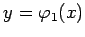
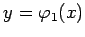
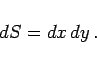

Inhalt Index DeskTop Bronstein

 Integralrechnung Mehrfachintegrale Doppelintegral Berechnung des Doppelintegrals
Integralrechnung Mehrfachintegrale Doppelintegral Berechnung des Doppelintegrals


Das Integrationsgebiet, das als Flächenstück aufgefaßt wird, teilt man mit Hilfe von Koordinatenlinien in infinitesimale Rechtecke ein (s. linke Abbildung).
Darauf erfolgt eine Summation aller Differentiale  , beginnend mit allen Rechtecken längs jedes vertikalen Streifens, danach längs jedes horizontalen Streifens. Die analytische Formulierung lautet:
, beginnend mit allen Rechtecken längs jedes vertikalen Streifens, danach längs jedes horizontalen Streifens. Die analytische Formulierung lautet:
Dabei sind  und  die Gleichungen der oberen bzw. unteren Randkurve und des Flächenstückes
und  die Gleichungen der oberen bzw. unteren Randkurve und des Flächenstückes  . Mit a bzw. b sind die Abszissen der am weitesten links bzw. rechts liegenden Kurvenpunkte bezeichnet. Das Flächenelement in kartesischen Koordinaten berechnet sich gemäß
. Mit a bzw. b sind die Abszissen der am weitesten links bzw. rechts liegenden Kurvenpunkte bezeichnet. Das Flächenelement in kartesischen Koordinaten berechnet sich gemäß
|  | (8.136b) |
Bei der Ausführung der ersten Integration wird x konstant gehalten. Die eckigen Klammern in (8.136a) werden üblicherweise weggelassen, indem verabredungsgemäß das innere Integral der inneren Integrationsvariablen zugeordnet wird, das äußere der an zweiter Stelle stehenden Integrationsvariablen. In (8.136a) stehen die Differentialzeichen dx und dy am Ende des Integranden. Ebenso üblich ist es, diese Zeichen gleich hinter den Integralzeichen vor die Funktionen des Integranden zu setzen.
Man kann die Berechnung in kartesischen Koordinaten (s. rechte Abbildung) auch in der umgekehrten Reihenfolge ausführen:
| (8.136c) |
| Beispiel |
|
, wobei S die Fläche zwischen der Parabel y = x2 und der Geraden y = 2x in der Abbildung ist.
oder |